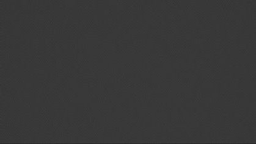
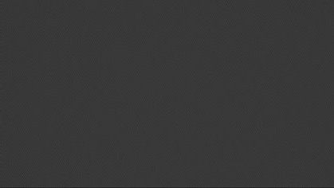

CHÂTEAU ARDENT
Novembre 2025
Blender, Photoshop


 

Contexte :
Dans le cadre du cours de production 3D, nous devions modéliser un batîment sur Blender avec la contrainte de ne pas utiliser
le mode Edit, qui est normalement indispensable.
Réalisation :
J'ai choisi de m'inspirer du château de Bowser dans l'univers de Mario.
Pour soustraire les objets entre eux, j'ai utilisé le modificateur booléan.
J'ai ensuite appliqué des couleurs, des textures et des lumières, ainsi qu'un sol et des douves de lave.
Afin de rendre le tout plus réaliste, j'ai modifié le rendu sur Photoshop, ce qui a donné une atmosphère
effrayante et un rendu cinématique.
Conclusion :
Ne pas utiliser le mode Edit était très frustrant, mais cela a testé ma patience.
Je suis fier du résultat que je trouve très esthétique.